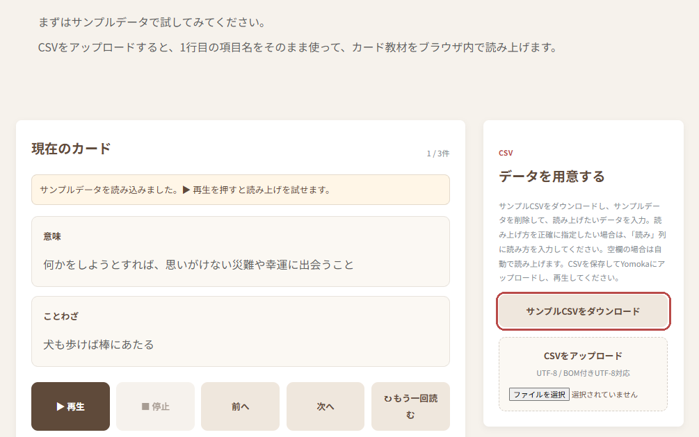
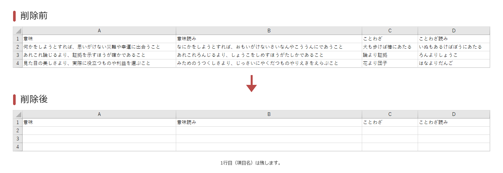
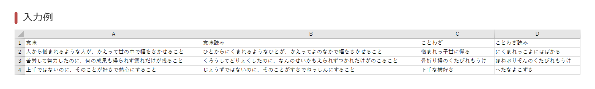
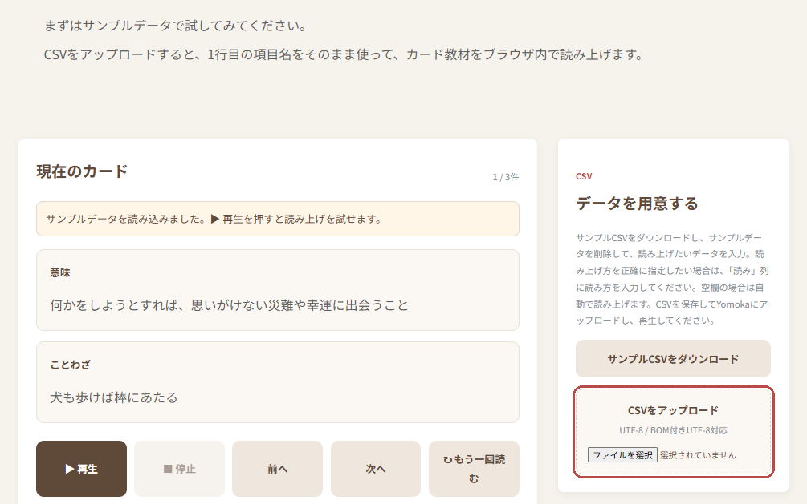
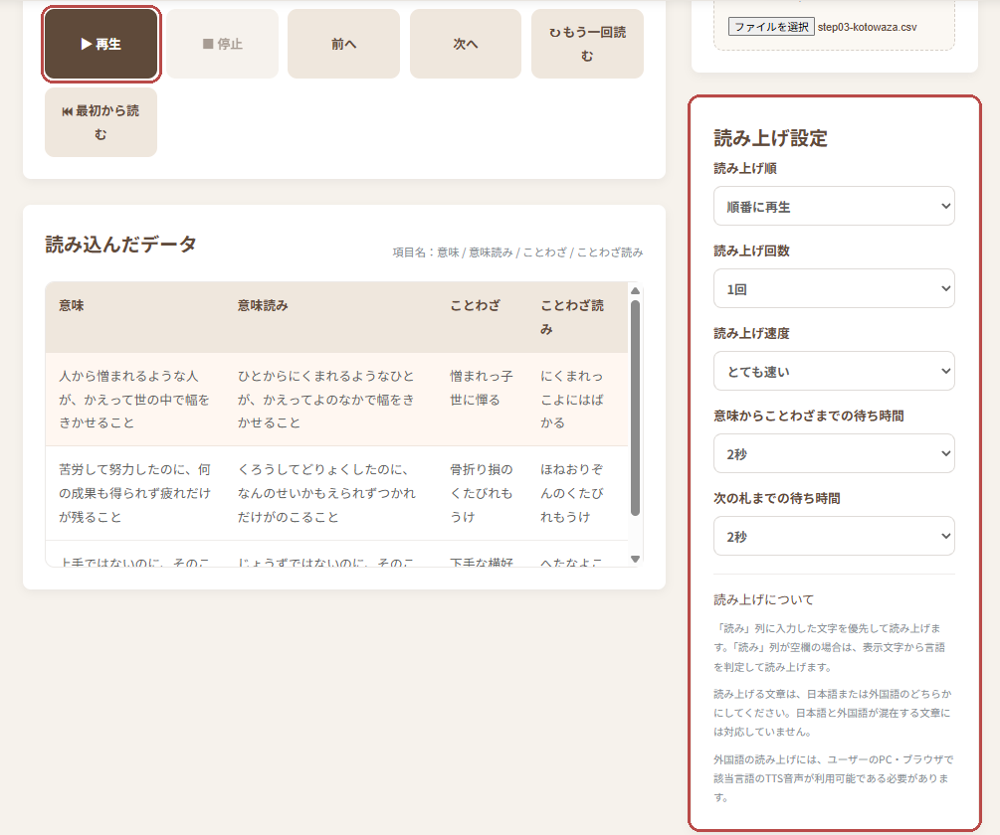

① サンプルCSVをダウンロード
「カードを読む」ページの「サンプルCSVをダウンロード」から、サンプルCSVをダウンロードします。

「カードを読む」ページの「サンプルCSVをダウンロード」から、サンプルCSVをダウンロードします。

サンプルCSVの2行目以降のデータを削除します。

サンプルCSVの2行目以降に、読み上げたいデータを入力します。
必要に応じて1行目も編集してください。1行目の意味や入力方法の詳細は、「CSVの作り方」をご覧ください。

「カードを読む」ページの「CSVをアップロード」から、CSVをアップロードします。

読み上げ設定をお好みに変更し、再生ボタンを押します。
